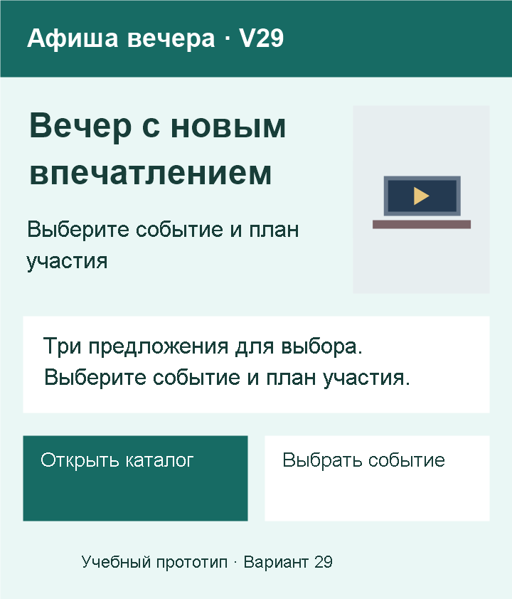
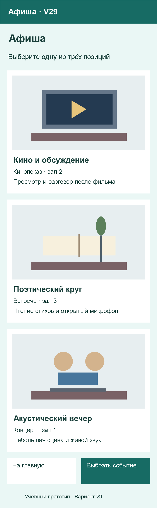
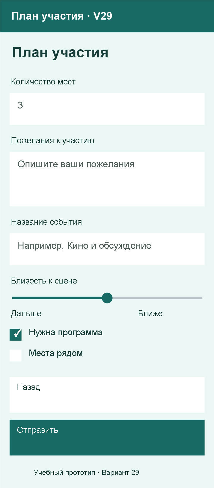
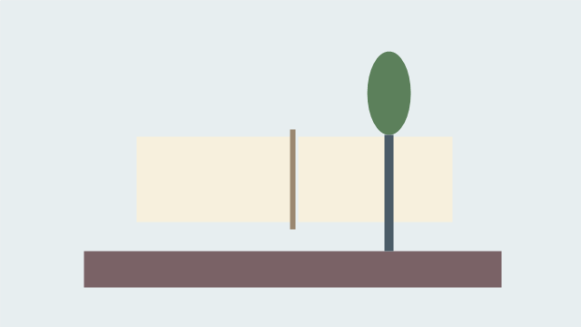
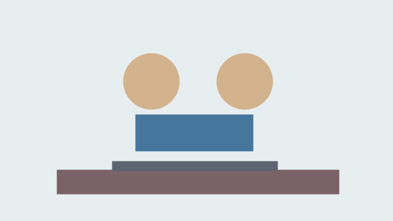

Вариант 29 — Афиша вечера
Ваше веб-приложение — «Афиша вечера · V29». Сохраните номер 29 на всём протяжении работы. Фамилия в приложении не требуется.
Здесь находятся ваши данные: тексты, изображения и цвета. Действия по шагам и код — в статьях занятий. Выполняйте только текущий этап.
Что сделать сейчас
Пары 13–14: продолжайте свою папку Variant29-web по статье 13: главная и каталог, затем статье 14: HTML-форма. Все элементы пока идут сверху вниз; используйте уже изученные правила CSS.
| Занятие | Результат для вашего варианта |
|---|---|
| 13 — главная и каталог | Прежний index.html и отдельный catalog.html, общий style.css и папка images; навигация между страницами; все три позиции каталога |
| 14 — HTML-форма | form.html с данными формы ниже; навигация между тремя страницами и локальная проверка ввода |
Первый веб-этап — пары 10–12
Сохраните уже сделанную главную страницу. При необходимости восстановите её по статье 10.
| Занятие | Результат для вашего варианта |
|---|---|
| 10 — самостоятельно создаём страницу | Variant29-web/index.html: название, пояснение, заголовок главной, описание и изображение сверху вниз |
| 11 — проверяем и дополняем страницу | Показ преподавателю и исправления; миникаталог из первых двух названий и ссылка к нему на той же странице |
| 12 — обобщаем HTML и знакомимся с CSS | После лекции — шапка, основное содержание, подвал и внешний style.css с цветом текста и фоном |
Сложная компоновка макетов остаётся будущей целью. JavaScript, обработка заявок и PWA появятся позднее.
Содержание главной страницы
| Элемент | Ваш текст или изображение |
|---|---|
| Название приложения | Афиша вечера · V29 |
| Заголовок главной | Вечер с новым впечатлением |
| Короткое пояснение | Выберите событие и план участия |
| Описание | Три предложения для выбора. Выберите событие и план участия. |
| Основное изображение | item1.png из набора ниже |
| Название перехода к каталогу | Открыть каталог |
| Название перехода к форме | Выбрать событие |
| Подпись | Учебный прототип · Вариант 29 |
На паре 13 сохраните тексты главной и подпись. Для перехода на отдельный каталог используйте указанное название; на паре 14 добавьте переход к форме с названием из таблицы.
Содержание каталога
Название — «Афиша». Пояснение — «Выберите одну из трёх позиций».
| № | Название | Характеристика | Описание | Файл изображения |
|---|---|---|---|---|
| 1 | Кино и обсуждение | Кинопоказ · зал 2 | Просмотр и разговор после фильма | item1.png |
| 2 | Поэтический круг | Встреча · зал 3 | Чтение стихов и открытый микрофон | item2.png |
| 3 | Акустический вечер | Концерт · зал 1 | Небольшая сцена и живой звук | item3.png |
На паре 13 используйте все три позиции в указанном порядке. Для каждой позиции нужны отдельный article, название в h2, изображение с описанием alt, характеристика и описание. Разместите их обычными блоками сверху вниз.
Содержание формы — пара 14
Название формы — «План участия». Перед каждым полем должна оставаться видимая подпись.
| Подпись | Какие данные нужны | Уточнение |
|---|---|---|
| Количество мест | Целое количество от 1 | Шаг: 1; начальное значение: 3; поле обязательно |
| Пожелания к участию | Несколько строк текста | Подсказка: Опишите ваши пожелания |
| Название события | Выбор из трёх позиций каталога | Первая строка пустая; выбор обязателен |
Дополнительные возможности выбора:
- Нужна программа: выбрано в начале.
- Места рядом: не выбрано в начале.
- Близость к сцене: шкала от 1 до 5; начальное значение 3. Края шкалы: «Дальше» и «Ближе».
Текст кнопки отправки — «Выбрать событие». Ссылка возврата — «Назад», ведёт на главную страницу. Подписи полей должны быть связаны с элементами через for и id; у элементов формы нужны name. Выбор позиции — select с тремя названиями из каталога и пустой первой строкой; количество — числовое поле; пожелания — многострочное поле с указанной подсказкой. Два флажка независимы; сохраните исходный выбор и данные ползунка.
Локальная отправка методом GET перезагружает страницу с параметрами в адресе. Это учебная проверка ввода: данные не сохраняются и не обрабатываются; сервер в этой работе не используется. Порядок настройки и код — в статье 14.
Оформление текущего этапа
- Фон:
#EAF7F5. Основной текст:#183E39. - Основной цвет действий для дальнейшего оформления:
#176B64, текст на нём — белый. Проверяйте читаемость. - Сейчас главная, каталог и форма имеют простую вертикальную компоновку. Общий
style.cssзадаёт уже изученные цвет текста, фон и оформление изображений. - Главное название выделено, подписи полей читаются, изображения сохраняют пропорции.
- При сужении окна текст и действия остаются доступны; элементы не перекрывают друг друга.
Макеты будущего приложения — следующие этапы
Макеты ниже — будущая цель. Будущая компоновка каталога: изображения сверху. На парах 13–14 нужны три простые страницы по статье 13 и статье 14. Сложную компоновку этих макетов сейчас воспроизводить не нужно.



Проверка текущего этапа
После пары 13 покажите прежнюю главную, отдельный каталог из трёх позиций своего варианта, общий файл стилей и рабочие переходы в обе стороны. У каждой позиции должны совпадать название, изображение, характеристика и описание из таблицы.
После пары 14 покажите форму своего варианта и навигацию между тремя страницами. Проверьте запрет пустого выбора и количества меньше 1, начальное количество 3, оба независимых флажка и начальное положение ползунка 3. Покажите локальную отправку и объясните появление параметров в адресе без сохранения и обработки данных. Сохраните папку проекта целиком.
Порядок проверки и объяснения — в статье текущего занятия.
Изображения для работы
Сохраните нужные иллюстрации в свой веб-проект по инструкции занятия. Разрешены собственные изображения по тем же сюжетам.


Вернуться к выбору варианта или занятиям курса.